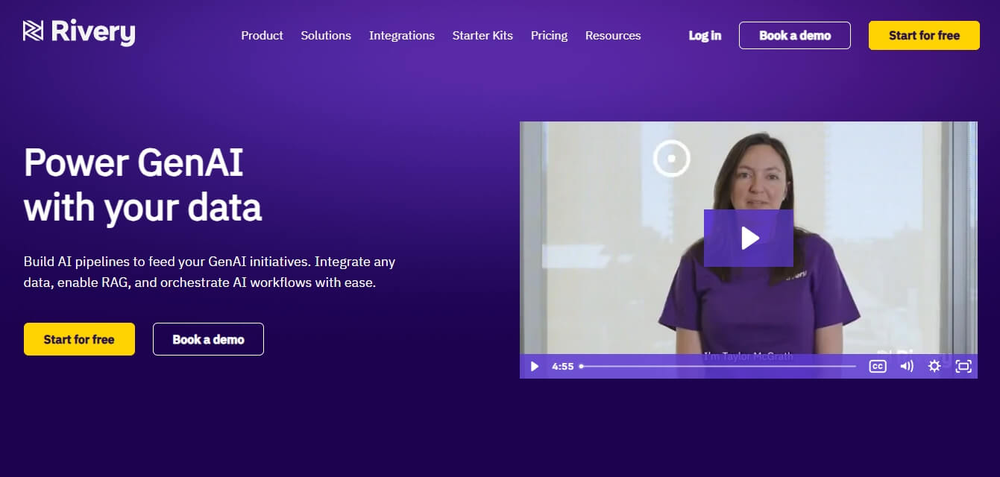
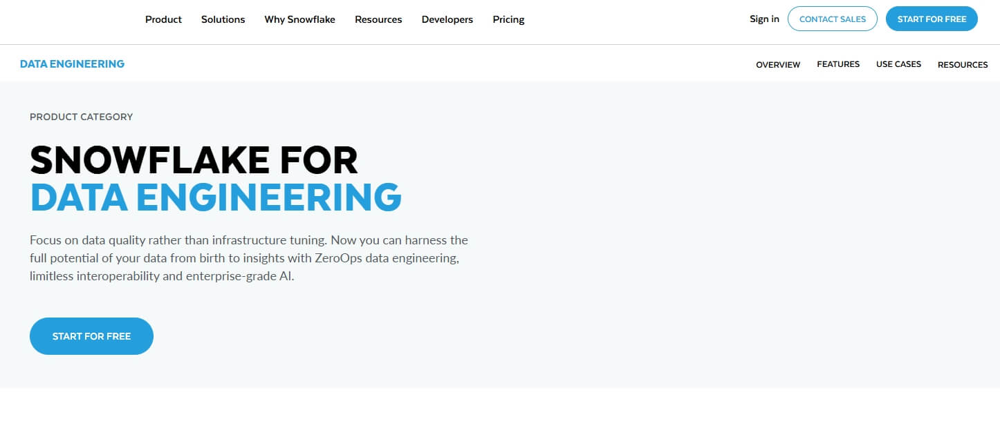
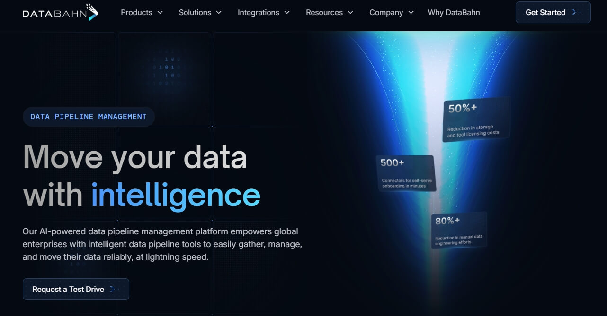
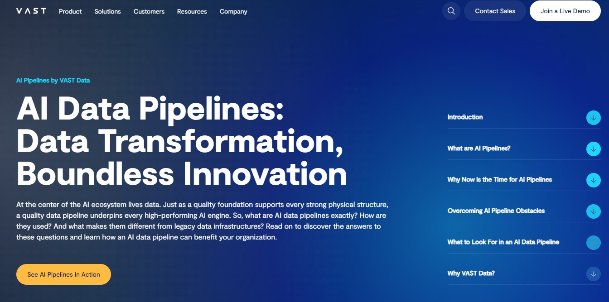
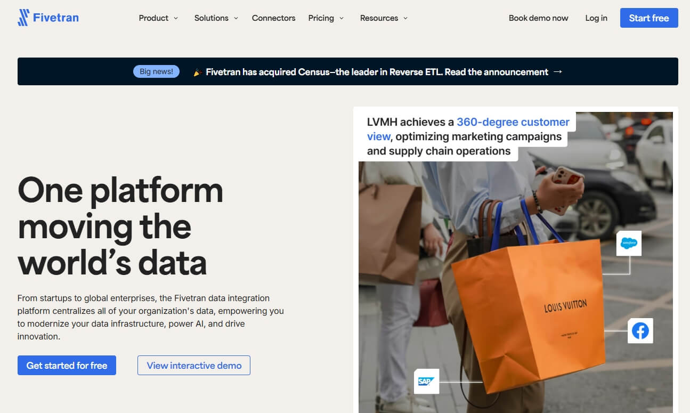
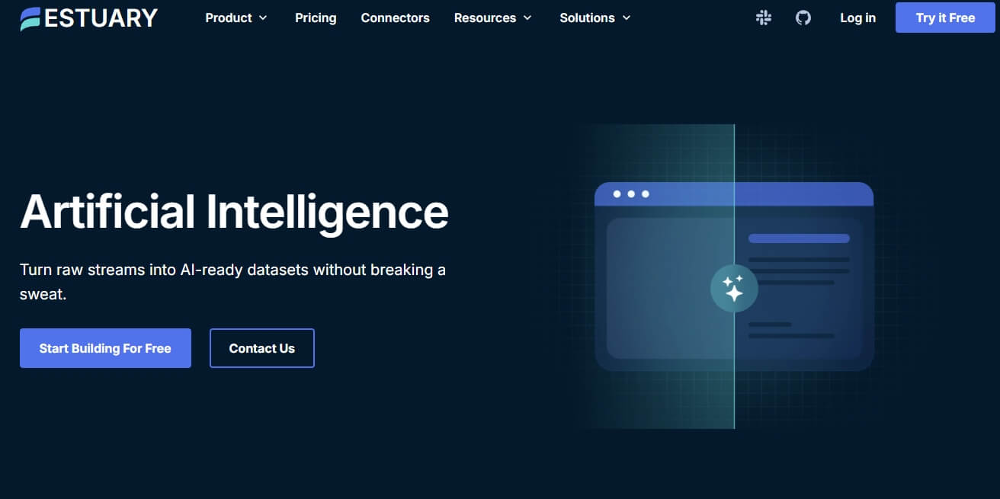
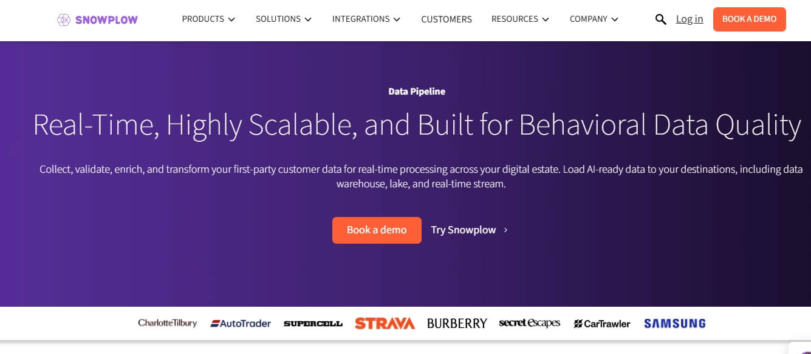

Moreover, many providers have expanded their offerings to introduce features such as AI-assisted data processing, managed services that ensure regulatory compliance, and proactive support systems. This article conducts an in-depth analysis of enterprise AI data pipeline solutions with a special focus on Bright Data—a solution renowned for its comprehensive managed services, robust data collection infrastructure, and a deep commitment to compliance and security.
What is an AI Data Pipeline?
An AI data pipeline is an end-to-end workflow that ingests raw data, transforms it into a representation that machine-learning models can learn from, trains or fine-tunes the models, evaluates their performance, and deploys them to production—while continuously monitoring both data and model quality. Unlike conventional ETL/ELT pipelines that focus on moving data into a warehouse or BI layer, an AI pipeline must also handle versioning of data, code, and models; lineage tracking; reproducible experimentation; distributed training; online/offline feature stores; and automated retraining triggered by drift or performance degradation.
AI Pipelines VS Traditional Data Pipelines
Traditional pipelines ingest raw data, apply SQL-based cleansing and aggregation, then load the results into a warehouse for dashboards; once delivered, the job is done until the next batch. AI pipelines begin the same
AI pipelines begin the same way, but immediately version every dataset, feature, and model artifact. They run GPU-accelerated feature engineering, launch distributed training, evaluate against fairness and accuracy thresholds, and serve models at scale. Production predictions feed back in real time, triggering automated retraining when drift appears, so the pipeline keeps learning instead of ending.
| Dimension | Traditional Data Pipeline | AI Data Pipeline |
|---|---|---|
| Primary Goal | Deliver clean, analytics-ready data for reporting & dashboards | Deliver high-quality features and continuously improving models |
| End-User | Business analysts, BI tools | Data scientists, ML engineers, inference services |
| Data Granularity | Aggregated, de-identified, historical | Raw or near-raw events, time-series, images, audio |
| Transform Logic | SQL, deterministic rules | Feature engineering with statistical transforms, embeddings, augmentation |
| Compute Pattern | Batch ETL/ELT; occasional micro-batch | Batch + streaming + GPU/TPU training & inference |
| Governance Focus | Data quality, GDPR compliance | Data quality + model fairness, explainability, lineage, model registry |
| Versioning | Dataset snapshots | Data, code, hyper-parameters, and model artifacts |
| Feedback Loop | Manual QA & scheduled reloads | Automated drift detection, retraining, A/B tests, shadow deployments |
| Tooling Examples | Airflow, dbt, Snowflake | Kubeflow, MLflow, Vertex AI, Feast, Ray, TFX |
1. Bright Data Managed Service

Bright Data Managed Service is a fully-outsourced, enterprise-grade data-collection solution that turns the public web into clean, structured and compliant datasets without any engineering lift. A dedicated project manager starts by scoping sources, KPIs and delivery formats, after which Bright Data automates extraction at scale through its global proxy network of 150 M+ real-user IPs across 195 countries. Built-in deduplication, validation and enrichment pipelines produce analytics-ready tables, while real-time dashboards and expert-curated reports translate raw records into actionable insights. From thousands to billions of rows, the service scales elastically, maintains 99.99 % uptime and guarantees full adherence to GDPR, CCPA and site-level policies.
2. Rivery
Rivery is a no-code, cloud-native AI Data Pipeline platform purpose-built to feed Generative AI and RAG applications with fresh, high-quality data. In minutes, 200+ managed connectors ingest structured and unstructured sources—databases, CRMs, marketing suites, APIs—into Snowflake, BigQuery or any vector store. Push-down SQL and inline Python transforms cleanse, chunk and embed content while vector-capable destinations like Snowflake Cortex and Vertex AI store embeddings for millisecond retrieval. A visual orchestration layer triggers GenAI jobs the moment upstream data lands, and Rivery Copilot auto-generates new connectors or custom logic on demand, eliminating days of engineering.
3. Snowflake
Snowflake’s AI Data Pipeline is a ZeroOps, end-to-end environment that moves data from “raw to AI-ready” without infrastructure tuning. Engineers ingest any structured, semi-structured or unstructured source—batch or streaming—into an open lakehouse built on Apache Iceberg, then transform it with SQL, dbt Projects, Snowpark Python or pandas-scale Modin. Native Cortex LLM and Document AI services embed, classify, summarize and translate content in place, feeding real-time RAG flows to downstream agents and applications. Git-native DevOps, observability views and pay-per-use elastic compute let teams deliver reliable data SLAs while cutting typical Spark costs by over 50 %.
4. DataBahn
DataBahn offers an AI-native data-pipeline management platform that turns the entire telemetry lifecycle—from any source to any destination—into a governed, insight-rich flow. Its Smart Edge layer performs agentless collection and edge analytics, while Highway orchestrates AI-driven filtering, schema-drift management and cost optimization. Cruz, the “AI Data Engineer in a Box,” autonomously parses, enriches and monitors pipelines, eliminating manual tuning. All data lands in Reef, a contextual graph database that correlates multi-source events and keeps it AI-ready. With 500+ plug-and-play integrations across cloud, on-prem and IoT/OT systems, DataBahn delivers real-time visibility, slashes SIEM/storage costs (customers report $250-350 k annual savings) and removes ingress/egress fees, all through a zero-code interface that non-technical users can master in minutes.
5. Google Cloud Dataflow

Google Cloud Dataflow is a fully-managed stream and batch processing platform that turns real-time data into instant, AI-ready intelligence. Built on open-source Apache Beam, it ingests Pub/Sub, Kafka, CDC, clickstream or IoT events, then applies GPU-accelerated MLTransform and RunInference to enrich flows with Vertex AI, Gemini or Gemma models—all without server management. Auto-scaling clusters shrink to zero or burst to 4,000 workers, handling petabytes while Dataflow’s diagnostic console pinpoints stragglers, samples data and forecasts costs. Pre-built templates and Vertex AI notebooks let teams launch secure, low-latency ETL, RAG or generative-AI pipelines in minutes, streaming results into BigQuery, Cloud Storage or downstream apps for personalized experiences, fraud detection or threat response.
6. VAST
VAST Data replaces patchwork storage tiers with a single, AI-first operating system that carries data from raw ingestion to production-grade training and inference without ever moving it. Built on an exabyte-scale, all-flash architecture, the platform ingests structured and unstructured streams via multiprotocol NFS, SMB, S3 or GPU-direct paths, then performs inline cleaning, quantization, embedding and RAG enrichment in-database. A global namespace, combined with zero-copy snapshots and immutable versioning, lets thousands of tenants share one logical pool while maintaining strict QoS and zero-trust isolation. The result is a consolidated pipeline that slashes latency to microseconds, keeps GPUs saturated, and reduces TCO by eliminating duplicate copies across siloed systems.
7. Fivetran Automated Data Movement
Fivetran delivers a fully-managed, enterprise-grade data-movement backbone that turns 700+ SaaS, database, ERP and file sources into analytics- and AI-ready assets in minutes. With zero-code connectors, automatic schema drift handling, and built-in change-data-capture, raw data is ingested, normalized, and streamed into cloud warehouses, lakes or vector stores at petabyte scale. Hybrid deployment options let teams keep sensitive workloads on-prem while leveraging the same secure, SOC 2 / ISO 27001 / GDPR / HIPAA-compliant pipelines. By eliminating engineering overhead, Fivetran accelerates time-to-insight for real-time dashboards, ML features and generative-AI applications alike.
8. Azure Data Factory

Azure Data Factory (ADF) is Microsoft’s fully-managed, serverless data-integration service that unifies on-premises, SaaS and cloud data into a single AI-ready pipeline. Through a drag-and-drop canvas or Git-enabled CI/CD workflows, citizen integrators and pro developers alike can design both ETL and ELT flows—leveraging more than 90 built-in, maintenance-free connectors to ingest sources such as SAP, Salesforce, Cosmos DB and REST APIs. A managed Apache Spark engine auto-generates and optimizes transformation code, while intent-driven mapping accelerates schema alignment. Pipelines can feed cleansed, enriched data directly into Azure Synapse Analytics, Azure ML or AI services for real-time business insights and model training, all under the umbrella of Microsoft’s enterprise-grade security and 100+ compliance certifications.
9. AWS Glue

AWS Glue is a fully-managed, serverless data-integration service that accelerates every stage of an AI pipeline—from raw ingestion to model-ready datasets—without infrastructure to provision or tune. Connectors automatically discover and catalog metadata across 100+ AWS, on-prem and third-party sources, while Glue Studio’s visual ETL canvas or interactive notebooks let engineers design Apache Spark or Ray pipelines that scale from GB to PB on demand. Built-in generative-AI assistants auto-generate PySpark code, suggest schema evolution strategies and surface root-cause fixes for job failures, shrinking development cycles from days to minutes. Integrated with next-gen Amazon SageMaker, Glue streams cleansed, enriched data directly into feature stores, vector databases and training clusters, enabling real-time experimentation and continuous retraining.
10. Apache Airflow

Apache Airflow is the open-source orchestration engine that turns Python code into production-grade AI data pipelines. Workflows are defined as DAGs in pure Python, enabling dynamic task generation, loops and branching for complex ML lifecycles such as feature extraction, model training, hyper-parameter tuning and batch inference. A message-queue backend lets the scheduler scale horizontally to thousands of concurrent workers, while the modern web UI delivers real-time visibility into task logs, retries and SLAs. A rich operator ecosystem provides out-of-the-box hooks for Google Cloud, AWS, Azure, Snowflake, Spark, Kubernetes and more, making it trivial to stitch together ingestion, transformation, model deployment and monitoring steps. Because everything is code, teams can version-control, test and reuse pipelines like any other software artifact, accelerating experimentation and continuous delivery of AI services.
11. Estuary
Estuary Flow is a cloud-native, real-time data-integration platform purpose-built to feed AI and Retrieval-Augmented Generation (RAG) applications with fresh, unified data. Using low-latency CDC and stream-processing, Flow continuously syncs sources such as Salesforce, HubSpot, Postgres and Kafka, then applies declarative SQL/TypeScript transforms to clean, enrich and evolve schemas on the fly. Output can be materialized directly into vector stores like Pinecone or Snowflake in sub-second windows, ensuring models always retrieve the latest context. With built-in back-pressure handling and exactly-once semantics, Flow scales from megabytes to terabytes without operational overhead, letting data scientists focus on model accuracy rather than plumbing.
12. Snowplow
Snowplow delivers a real-time, highly-scalable behavioral data pipeline designed to turn raw customer interactions into AI-ready datasets. Using 35+ first-party trackers and webhooks, it captures granular events from web, mobile, IoT, games and AI agents, automatically enriching each with 130+ contextual properties and schema-validating payloads in flight. In-stream enrichments—PII pseudonymization, bot detection, campaign attribution—run via JavaScript, SQL or APIs, ensuring compliance with GDPR, CCPA and HIPAA while keeping latency low. The unified event table lands directly into Snowflake, Databricks, BigQuery, S3 or streaming sinks like Kafka and Pub/Sub, eliminating joins and accelerating downstream ML and RAG workloads. Choose Snowplow-hosted or Private Managed Cloud on AWS, GCP or Azure for enterprise security and guaranteed SLAs.
Conclusion
Enterprise AI data pipelines are critical to unlocking the full potential of AI-driven operations. A robust pipeline not only ensures the timely and secure flow of data but also enables actionable insights that drive business innovation. The comparative review of leading solutions reveals that while many platforms focus on various aspects of data integration, support, and scalability.
while many solutions provide excellent capabilities in specific areas, Bright Data’s managed service offering—combined with strong integration, proactive support, and a comprehensive security framework—positions it as a preferred choice for enterprises looking to build effective, reliable, and future-proof AI data pipelines.